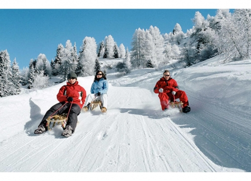

|

|
Oltre allo sport dello slittino, che solitamente si tiene su piste artificiali, ovvero appositamente preparate ad-hoc, con curve paraboliche e con fondo ghiacciato, esiste anche lo slittino su pista naturale.
Questo genere di competizioni è molto in voga nel nord d'Italia in Svizzera ed in Austria, dove solitamente di utilizzano strade forestali naturalmente innevate e poi battute.
Si può affermare che questo tipo di competizione sportiva è quella originale, prima dell'avvento dello slittino su pista artificiale.
HOME PAGE
SLITTINO
SCI
|